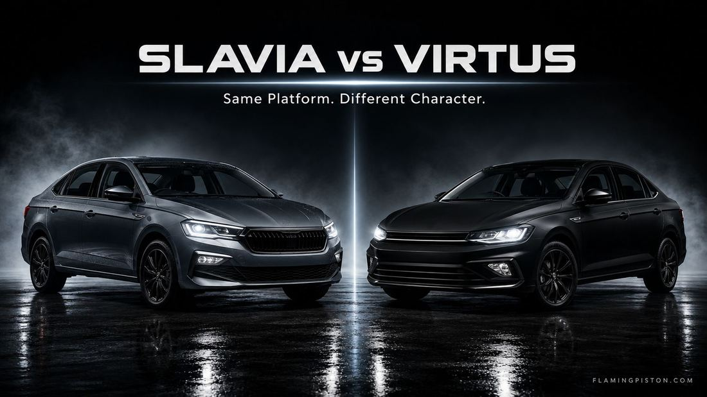
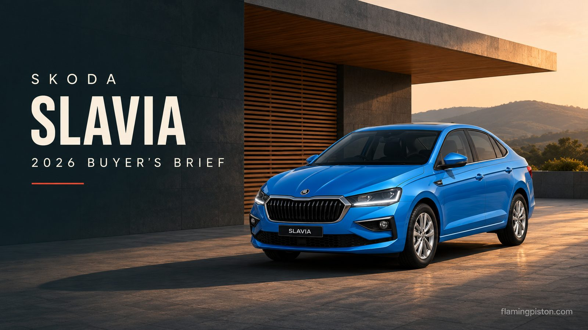
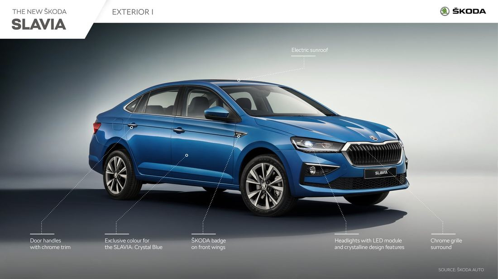
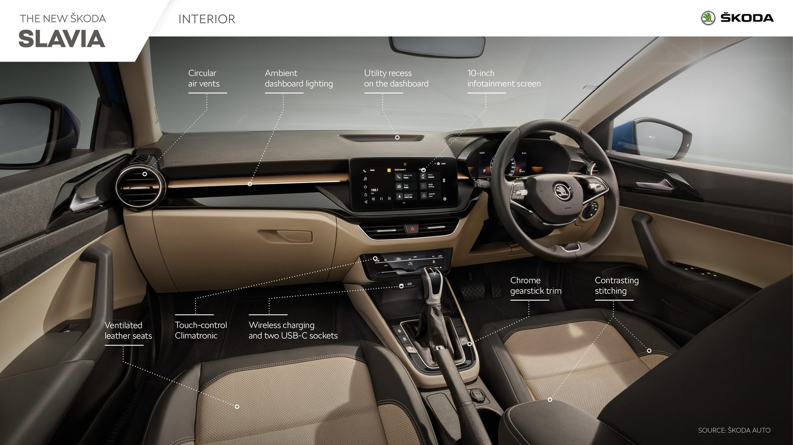
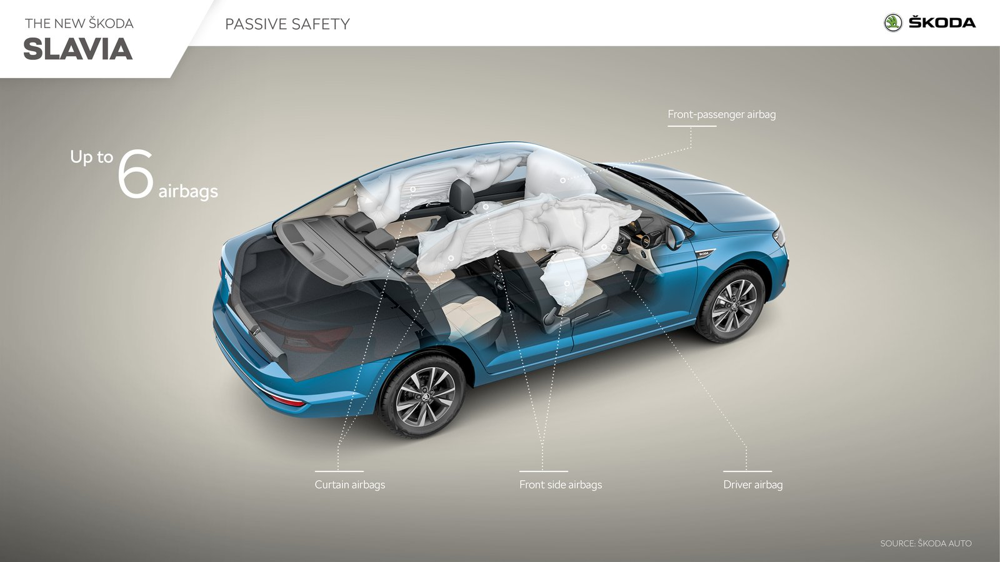
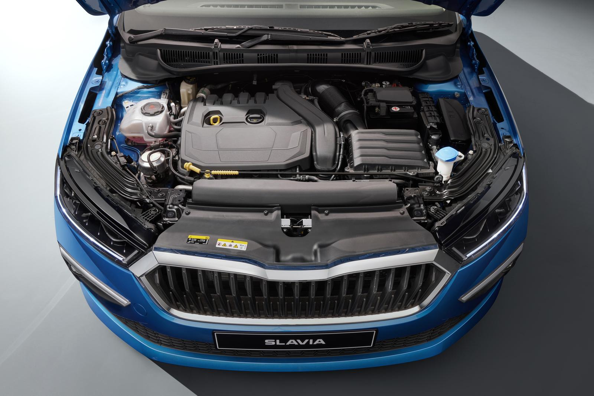
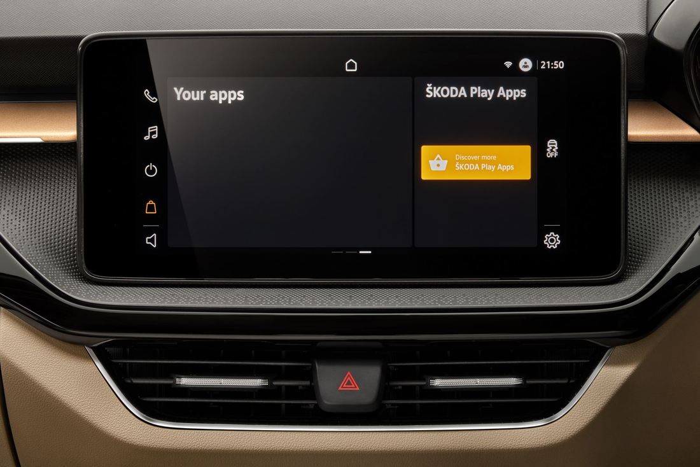
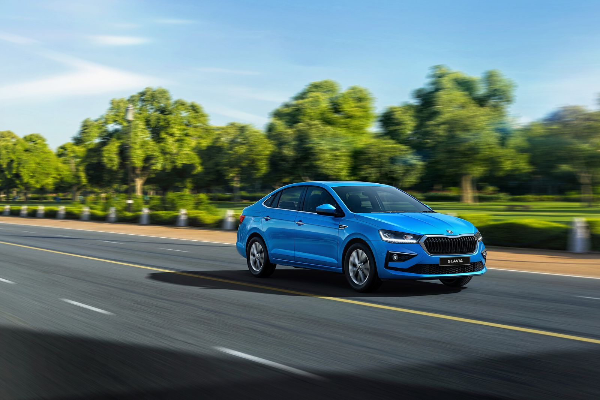

Skoda Slavia Facelift 2026: Which Variant to Buy

Image: Skoda Auto India, edited by FlamingPiston
Published Aug 18, 2026 · Updated Nov 21, 2026
8 min read
Category: Sedans
Škoda revealed the facelifted Slavia on 18 August 2026 and announced prices in October. The headline change is a new eight-speed automatic for the 1.0 TSI, which replaces the six-speed gearbox that reviewers often criticised. A 360-degree camera, bigger screens and a rear-seat massager have also been added.
A Note on This Review
This review uses Škoda’s published specifications and prices, the Global NCAP report and other publications’ drives, not our own test drive. Prices and specifications were checked on 21 November 2026. See our Review Methodology for the distinction between editorial assessment and measured testing.
Quick Verdict
Škoda hasn’t reinvented the Slavia, and on a car that already drove well, that’s the right call. The new eight-speed automatic fixes the 1.0 TSI’s weakest point, and the 360-degree camera, bigger digital cluster and rear-seat massager make the top trims feel properly modern. If you liked the Slavia before, this update removes most of the reasons you would have hesitated.
1
Skoda Slavia Facelift Price & Variants (2026)
₹10.00 – ₹18.84 Lakh*
*Ex-showroom. Škoda India lists the range from ₹9,99,900; trim prices are from CarWale and CarDekho, checked 21 November 2026.
| Trim | Ex-Showroom Price |
|---|---|
| Classic (1.0 MT) | ₹10.00 lakh |
| Classic+ | ₹10.99 – 12.49 lakh |
| Signature | ₹13.94 – 14.94 lakh |
| Sportline | ₹14.34 – 15.34 lakh |
| Prestige | ₹15.89 – 18.59 lakh |
| Monte Carlo | ₹17.29 – 18.84 lakh |
The starting price is unchanged from the pre-facelift car, and Autocar India notes that the top version costs ₹64,000 more than before. The 1.5 TSI is sold only in the Prestige and Monte Carlo, and only with the DSG. The manual option for the bigger engine has gone. The Classic is the only trim without an automatic.
2
Exterior Design
The facelift is a restrained update, not a new shape. The butterfly grille gets new segmented chrome trim, the LED headlamps get a new daytime-running-light signature, and the bumper is new, with LED fog lamps. At the back there are sequential indicators, revised tail-lamp graphics and a new ‘SKODA’ trim piece. New 16-inch alloys, two new colours (Arctic Silver and Cappuccino Beige) and a blacked-out Monte Carlo complete the changes. The car still has 179 mm of unladen ground clearance.

Image: Skoda Auto
3
Interior Design & Practicality
The dashboard layout carries over, with new trim themes: beige and black with copper inserts on the Prestige, and black with red details on the Monte Carlo. Autocar India found the front seats wide and supportive and the rear legroom generous. Rear headroom is tight for tall passengers, and the bench suits two adults better than three.
The 521-litre boot is one of the largest in the class, with a 60:40 split rear seat and a spare wheel under the floor. That is a real advantage over the Honda City and Hyundai Verna for anyone who regularly packs for long trips.

Image: Skoda Auto
4
Features & Safety
Six airbags and electronic stability control are standard on every Slavia, and Škoda counts more than 25 safety features across the range. The facelift adds a 360-degree camera and front parking sensors, which Škoda offers on selected variants. Autocar India rated the camera’s picture among the best at this price.
The touchscreen grows slightly to 10.1 inches and gains an AI voice assistant. The Prestige and Monte Carlo get a new 10.25-inch digital driver’s display and a rear-seat massage function, a first in this segment. The Signature and Sportline keep an 8-inch display, and the Classic trims have analogue dials. A new variable-geometry AC compressor improves cooling. Missing against rivals: driver-assistance systems and an electronic parking brake.

Image: Skoda Auto
5
Mileage, Engine & Performance
The engines are unchanged. The gearbox is the news: the 1.0 TSI’s old six-speed automatic is replaced by an Aisin eight-speed torque converter, first used in the Kushaq facelift. The 1.5 TSI keeps its seven-speed DSG, adds rear disc brakes and loses the manual option.
| Engine | Power / Torque | Transmission Options |
|---|---|---|
| 1.0L TSI Turbo-Petrol | 85 kW (115 PS) / 178 Nm | 6-speed Manual, new 8-speed Automatic |
| 1.5L TSI Turbo-Petrol | 110 kW (150 PS) / 250 Nm | 7-speed DSG (dual-clutch) |
Autocar India found the eight-speed much smoother at low speed than the old gearbox, with quick manual shifts. The ratios are short, though, and the engine turns over 2,000 rpm at 100 km/h in eighth. The 1.0 also gets gravelly above 3,000 rpm. The 1.5 TSI is the stronger, smoother engine, with cylinder deactivation to save fuel.
| Engine / Gearbox | ARAI Claim |
|---|---|
| 1.0 TSI Manual | 19.76 kmpl |
| 1.0 TSI 8-speed Automatic | 19.5 kmpl |
| 1.5 TSI DSG | 18.79 kmpl |
These are ARAI claims listed by CarWale and CarDekho. In Autocar India’s tests of the mechanically identical Kushaq facelift, the 1.0 automatic returned 10.7 kmpl in the city and 15.10 kmpl on the highway, and the 1.5 DSG 9.55 and 15.29 kmpl.

Image: Skoda Auto
6
Tech & Safety Deep-Dive
This section draws on the published Global NCAP report and other publications’ drives, not our own, in line with our Review Methodology. The Slavia has five stars from Global NCAP for both adult and child protection, with 29.71 out of 34 and 42 out of 49. That result comes from the 2023 test of the pre-facelift car, the same test as the Volkswagen Virtus. The facelift keeps the same platform and six standard airbags but has not been tested separately.
On the road, Autocar India found a firm edge to the ride at low speed but excellent stability on the highway and composed, predictable handling. The gearbox change matters most if you drive in city traffic every day, because that is where the old six-speed felt hesitant.

Image: Skoda Auto
Spec Score: How We Rated It on Paper
Following our Review Methodology, we rate eight criteria on paper, using official specifications, prices and published test evidence rather than our own driving, then average them into a Spec Score.
| Criteria | Score |
|---|---|
| Design | 7.5 / 10 |
| Performance | 8.5 / 10 |
| Mileage Potential | 7.0 / 10 |
| Comfort | 8.0 / 10 |
| Features | 8.0 / 10 |
| Safety | 8.5 / 10 |
| Practicality | 8.5 / 10 |
| Value for Money | 7.5 / 10 |
| Spec Score (average) | 7.9 / 10 |
Why These Scores
Design: A clean, elegant sedan; the facelift changes are subtle.
Performance: Punchy engines, and the new eight-speed fixes the 1.0’s low-speed manners.
Mileage Potential: Competitive ARAI claims; published tests of the sister Kushaq show the usual real-world gap.
Comfort: Supportive seats and a roomy rear, with a firm edge to the low-speed ride.
Features: 360-degree camera and rear-seat massage, but no ADAS or electronic parking brake.
Safety: Five-star Global NCAP result, though from the 2023 test of the pre-facelift car.
Practicality: A 521-litre boot and generous rear legroom.
Value for Money: Fair pricing for the changes, but the 1.5 TSI is expensive.
7
Verdict
This was never going to be a ground-up reinvention, and it doesn’t need to be. The Slavia already drove well, and the facelift fixes the one mechanical complaint that kept coming up: a hesitant automatic on the more affordable engine. Add a useful 360-degree camera, sharper screens and the rear-seat massager, and Škoda has addressed real owner feedback rather than chasing cosmetic change. The 1.0 TSI automatic in Signature or Sportline trim is the value choice. Level 2 ADAS is still missing, so look elsewhere if that matters to you.

Image: Skoda Auto
Who Should Buy This
- Buyers who want an engaging turbo-petrol sedan to drive
- Anyone put off the outgoing Slavia by its automatic gearbox
- Buyers who want one of the largest boots in the midsize sedan class
- Families who value a proven five-star Global NCAP structure
Who Should Avoid This
- Buyers who need SUV-like seating height
- Anyone who wants driver-assistance systems
- Enthusiasts who want a manual gearbox with the 1.5 TSI
FAQs
When did the Skoda Slavia facelift launch in India?
Škoda revealed it on 18 August 2026 and announced prices in October 2026.
What is the price of the Skoda Slavia facelift?
From ₹10.00 lakh (Classic manual) to ₹18.84 lakh (Monte Carlo 1.5 DSG), ex-showroom. Confirm the exact trim price with the dealer.
What engines does the Slavia facelift get?
The same two turbo-petrols as before: a 1.0 TSI with 115 PS and 178 Nm, and a 1.5 TSI with 150 PS and 250 Nm.
What is new with the Slavia facelift’s automatic gearbox?
The 1.0 TSI automatic moves from a six-speed to a new eight-speed torque converter. The 1.5 TSI keeps its seven-speed DSG and is no longer offered with a manual.
What mileage does the Slavia facelift give?
ARAI claims are 19.76 kmpl for the 1.0 manual, 19.5 kmpl for the 1.0 automatic and 18.79 kmpl for the 1.5 DSG.
Is the Slavia facelift safe?
The Slavia has a five-star Global NCAP rating for adults and children from its 2023 test of the pre-facelift car. Six airbags are standard.
How much boot space does the Slavia have?
521 litres, among the largest in the midsize sedan segment.
More on the Slavia: vs Volkswagen Virtus · Volkswagen Virtus review · Launch News
Sources
- Škoda Auto India: Slavia
- Škoda Storyboard: Škoda Auto unveils updated Slavia in India (press release)
- Global NCAP: VW Virtus / Škoda Slavia fact sheet (PDF)
- Autocar India: Skoda Slavia facelift review
- Autocar India: 7 improvements the Slavia facelift gets
- CarWale: Skoda Slavia prices and specifications
- CarDekho: Skoda Slavia prices and specifications
Links checked 21 November 2026. Driving impressions and fuel tests are from the publications named in the text. We have not driven this car.